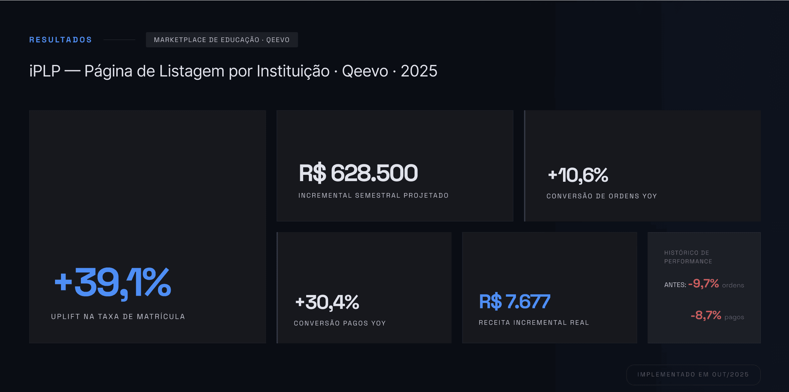
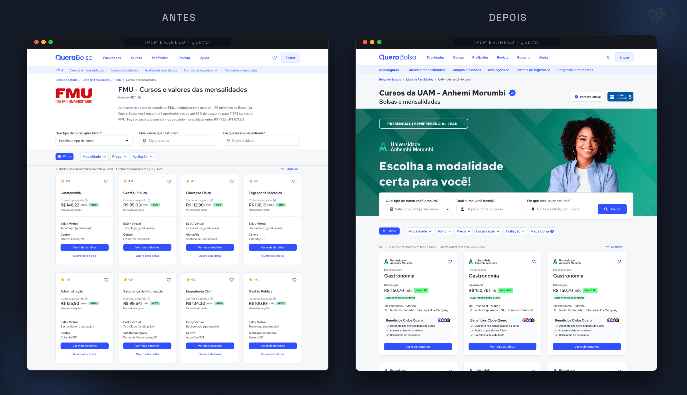
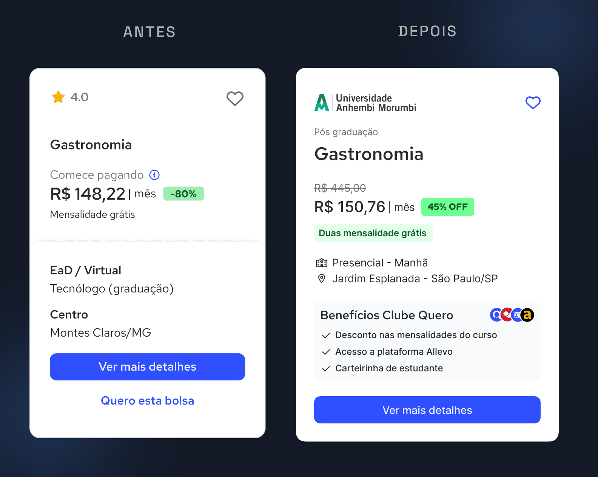
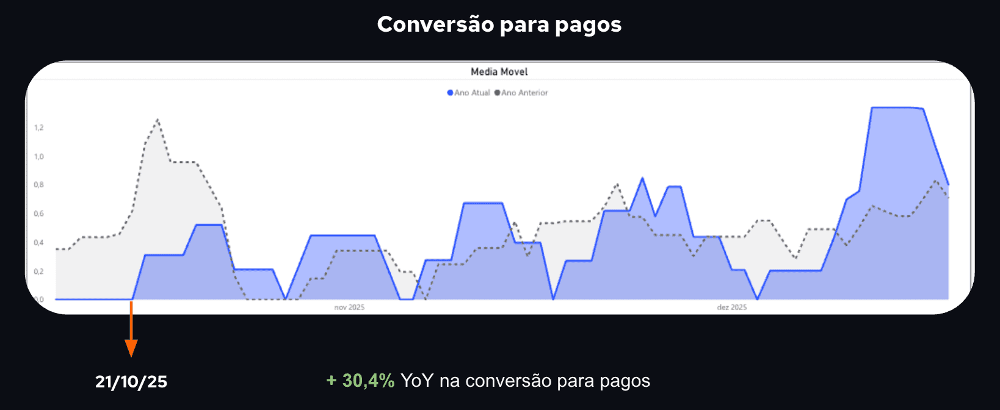
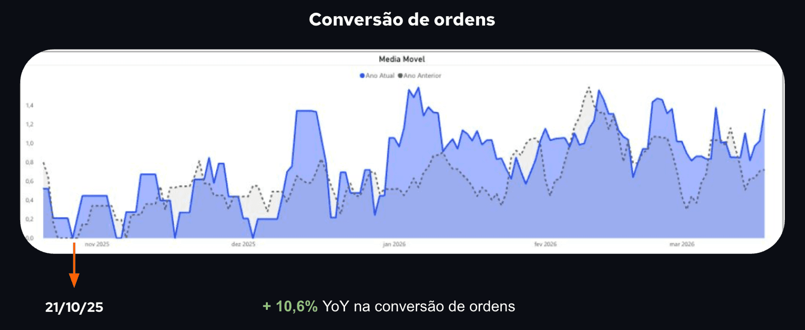

Reestruturação da experiência da página de listagem de cursos por instituição com estratégia branded, nova arquitetura de informação e hierarquia de oferta orientada a conversão.

O Quero Bolsa já tinha uma página de listagem de cursos por instituição. O problema: ela seguia o mesmo padrão visual de qualquer outra página do marketplace, sem identidade da IES, sem hierarquia diferenciada, sem aproveitamento da autoridade de marca que cada instituição parceira já tinha junto ao público.
Um dado externo reforçou a oportunidade: páginas branded usadas em outro produto da empresa apresentavam conversão 10% maior que o marketplace padrão. A lógica estava validada, faltava aplicar.
O dado que tornava isso urgente: 80% das ordens que engajavam nas comunicações migravam para fora do Quero Bolsa. O usuário clicava, chegava à página da IES no marketplace e saía para o site da própria instituição para fechar a matrícula.
A oportunidade era trazer a lógica de "loja oficial" para dentro do marketplace, como o Mercado Livre faz com marcas parceiras. Usar a credibilidade da IES a favor do funil de conversão, e não contra ele.
Transformar as páginas de IES em vitrines oficiais dentro do marketplace, com identidade visual própria, hero branded e cards diferenciados, aumentaria a confiança do usuário e reduziria a migração para sites externos, preservando o ecossistema de conversão.
Com dados de conversão mostrando queda consistente no funil, estruturei o discovery com objetivo claro, hipótese documentada e métricas de sucesso definidas antes de qualquer proposta visual, garantindo alinhamento com produto, negócio e engenharia desde o início.
Análise de comportamento no funil usando GA4, Hotjar e Metabase. Identificação do ponto de queda e correlação com o dado de migração externa (80% das ordens).
Análise de como plataformas como Mercado Livre e Hotmart estruturam lojas oficiais de parceiros, validando que o padrão já funcionava em outros contextos de marketplace.
Documentação estruturada com objetivo, hipótese central, métricas de sucesso e critérios de aceite, alinhados com PM e stakeholders antes de avançar para solução.
Os ajustes se concentraram no hero da página e nos cards da listagem, que receberam modelo com identidade da IES, diferente do padrão do marketplace. Uma aposta calculada.
Primeiro lançamento para a Cruzeiro do Sul Virtual, com acompanhamento próximo de métricas antes de qualquer expansão para outras IES.
O hero e os cards da listagem foram os dois pontos de maior impacto. Abaixo, a comparação entre a experiência anterior e a solução implementada.

Mudar o card da listagem para um modelo com identidade da IES foi a decisão mais arriscada. O card padrão funcionava para o marketplace como um todo. Introduzir uma exceção intencional em uma página de alto tráfego era um risco real.
A decisão foi sustentada pelos dados de comportamento, pela consistência com o que o mercado já validava em outros contextos, e pela hipótese de que o contexto branded justificava a diferenciação visual.

Antes da implementação, a conversão estava em queda consistente: 9,7% em ordens e 8,7% em pagos YoY. Após o lançamento:


A aposta no card diferenciado era o maior risco. Foi também o que mais moveu resultado.
Uma queda de 9,7% em ordens virou +10,6%. Um card fora do padrão do marketplace, sustentado por dados e hipótese clara, foi o que mudou a direção. A expansão para outras IES confirmou que a solução tinha escala, não era um caso isolado. O aprendizado que fica: contexto de marca importa para conversão, e dados de comportamento são o argumento certo pra convencer produto a aceitar o risco.